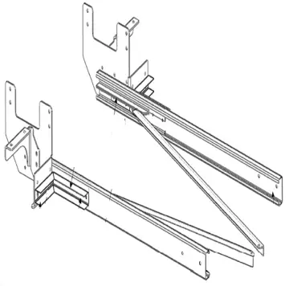
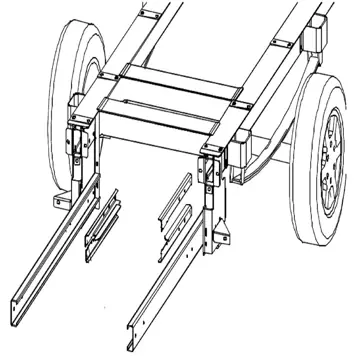
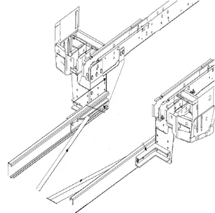

Ford Transit

Rahmenverlängerung Ford Transit Flachboden ab Bj. 2014 - heute
419,00 €inkl. MwSt., versandkostenfrei

Anhängerkupplung Variabel 12kN inkl. Rahmenverlängerung Ford Transit FT350 Normal ab Bj. 2000 – Fahrzeugspezifisch für Wohnmobil & Kastenwagen – mit EG-Typgenehmigung. Passend für: Ford Transit. Preis ab 899,00 € inkl. MwSt., versandkostenfrei. Montage in Bohmte und Diez nach Terminvereinbarung möglich.
Technische Daten Anhängerkupplung (variabel, 12,5 kN)
Technisch Daten Rahmenverlängerung für Ford Normal Bj 00-
Entdecken Sie unsere hochentwickelte Anhängerkupplung für den Ford Transit, die durch ihre vielseitige Anpassungsfähigkeit beeindruckt. Mit einer verstellbaren Breite von 812 mm bis 1420 mm passt sie sich optimal an Ihre Anforderungen an. Ein D-Wert von 12,5 kN und eine Stützlast von 150 kg gewährleisten sowohl maximale Sicherheit als auch Flexibilität beim Transport. Für den Ford Transit bieten wir eine robuste Rahmenverlängerung, die höchste Standards erfüllt. Mit einem Gewicht von 38 kg und einer Länge von 1500 mm, gefertigt aus feuerverzinktem Qualitätsstahl, liefert sie Stabilität und Langlebigkeit. Ein EG-Gutachten bestätigt die geprüfte Qualität. Erleben Sie technische Exzellenz für Ihren Ford Transit!
Möchten Sie Ihre Anhängerkupplung am Ford Transit selbst montieren? Mit unserer detaillierten Schritt-für-Schritt-Anleitung gelingt Ihnen das im Handumdrehen. Wir bieten Ihnen nicht nur eine praxisorientierte Anleitung für die Nachrüstung der Anhängerkupplung an Ihrem Ford Transit Wohnmobil, sondern auch eine umfassende Anleitung zur Rahmenverlängerung.
Unsere Anleitung ist speziell für DIY-Enthusiasten konzipiert, die ihre Projekte gerne selbst in die Hand nehmen. Laden Sie unsere Montageanleitung herunter und erleben Sie, wie einfach und unkompliziert die Installation Ihrer Anhängerkupplung sein kann. Dank klarer Anweisungen und hilfreicher Tipps wird der gesamte Prozess reibungslos ablaufen und optimal auf Ihre Bedürfnisse zugeschnitten sein.
Starten Sie Ihr Projekt noch heute und machen Sie Ihren Ford Transit fit für den nächsten Einsatz – mit unserer benutzerfreundlichen Montageanleitung!
Optimieren Sie die Elektrik Ihres Ford Transit Wohnmobils mit unseren erstklassigen Elektrosätzen und entfesseln Sie das volle Potenzial Ihrer Anhängerkupplung. Unsere breite Auswahl an maßgeschneiderten Elektrosätzen wurde speziell entwickelt, um eine nahtlose Integration zu gewährleisten – unabhängig davon, ob Ihr Wohnmobil bereits für eine Anhängerkupplung vorbereitet ist oder nicht.
Mit unseren Elektrosätzen stellen Sie sicher, dass die Verbindung zwischen Ihrem Ford Transit Wohnmobil und dem angehängten Equipment reibungslos funktioniert. Diese Sets wurden nach höchsten Qualitätsstandards gefertigt, um Ihnen eine zuverlässige und langlebige Funktionalität zu bieten. Sie verbessern nicht nur die Sicherheit und Effizienz Ihrer Fahrten, sondern tragen auch dazu bei, dass Ihre elektronischen Systeme optimal zusammenarbeiten.
Erkunden Sie unser vielfältiges Sortiment an Elektrosätzen und wählen Sie die passende Technologie, die Ihr Wohnmobil perfekt ergänzt. Mit unserer hochwertigen Ausrüstung erhöhen Sie nicht nur den Komfort auf Ihren Reisen, sondern stellen auch sicher, dass Ihr Ford Transit jederzeit bereit ist für Ihr nächstes Abenteuer. Entdecken Sie jetzt, wie Sie die Leistung Ihres Wohnmobils auf ein neues Niveau heben können!
Planen Sie die Montage einer Anhängerkupplung und möchten auf höchste Qualität setzen? Unsere erfahrenen Fachleute bieten Ihnen erstklassige Montagedienste mit transparenten Kosten und einer schnellen Ausführung. Innerhalb von nur 4 Stunden installieren wir Ihre Anhängerkupplung sorgfältig und präzise, sodass Sie sich auf eine perfekte Passform und maximale Sicherheit verlassen können.
Besuchen Sie uns an einem unserer Standorte – in Bruchheide 8, 49163 Bohmte, oder in der Werner-von-Siemens-Straße 10, 65582 Diez – und profitieren Sie von der Expertise unserer Spezialisten. Wir sorgen dafür, dass Ihre Fahrzeugausstattung optimal angepasst wird, damit Sie sicher und sorgenfrei unterwegs sind. Vertrauen Sie auf unsere Kompetenz für eine zuverlässige und professionelle Nachrüstung.
Planen Sie, Ihrem Ford Transit Wohnmobil eine Anhängerkupplung hinzuzufügen? Eine nachgerüstete Anhängerkupplung kann Ihnen unzählige Vorteile bieten, insbesondere wenn Sie zusätzlichen Stauraum benötigen oder Ihre Freizeit flexibel gestalten möchten. Mit einer Anhängerkupplung haben Sie die Möglichkeit, nicht nur Boote oder Autos zu transportieren, sondern auch kleine Transportanhänger mitzunehmen, was besonders bei begrenzten Zuladungsreserven in Reisemobilen von großem Vorteil ist.
Die Nachrüstung einer Anhängerkupplung am Ford Transit ist einfacher als gedacht. Unsere Anhängerkupplungen sind so konzipiert, dass sie sich problemlos an viele Reisemobile mit Alko-Chassis oder Serienfahrgestell anbringen lassen – auch wenn eine zusätzliche Rahmenverlängerung erforderlich ist. Dies gewährleistet nicht nur Stabilität, sondern auch eine perfekte Anpassung an Ihr Fahrzeug. Falls Sie später ein Trägersystem nachrüsten möchten, bildet die Anhängerkupplung oft die Basis, ohne dass zusätzliche Komponenten gekauft werden müssen.
Der Einbau der Anhängerkupplung an Ihrem Ford Transit ist mit etwas Geschick gut selbst zu bewältigen. Alles, was Sie tun müssen, ist, die Breite Ihres Chassis auszumessen, die universale Anhängerkupplung anzupassen und zu fixieren. Die Montage erfolgt durch Verschrauben der Komponenten und das Anbringen an den Seitenlaschen des Chassis. Unsere Anhängerkupplungen bieten die perfekte Basis für sichere und stabile Verbindungen, ob für Anhänger oder Heckträger.
Für die Montage einer Anhängerkupplung an Ihrem Ford Transit ist eine tragfähige Rahmenverlängerung essenziell. Sollten Sie keine geeignete Rahmenverlängerung besitzen, ist das kein Problem – wir liefern Rahmenverlängerungen in maximaler Länge, die Sie selbst auf die benötigte Länge kürzen können. So schaffen Sie ein stabiles Fundament für weitere Anbauten.
Eine Anhängerkupplung am Ford Transit Wohnmobil eröffnet Ihnen zahlreiche Möglichkeiten. Egal, ob Sie Fahrräder, Motorräder oder Boote mitnehmen möchten – die zusätzliche Flexibilität und der Stauraum, den eine Anhängerkupplung bietet, sind unbezahlbar. So können Sie Ihr Wohnmobil als Basis nutzen und mit dem angehängten Equipment die Umgebung erkunden, ohne immer wieder alles abbauen zu müssen.
Bei der Montage und Nutzung einer Anhängerkupplung an Ihrem Ford Transit Wohnmobil ist es wichtig, die zulässige maximale Anhängelast nicht zu überschreiten. Diese finden Sie im Fahrzeugschein Ihres Ford Transit. Ein Überladen kann nicht nur zu Sicherheitsproblemen führen, sondern auch den Verschleiß Ihres Wohnmobils beschleunigen. Achten Sie daher darauf, dass das Gewicht des Anhängers und der geladenen Gegenstände im sicheren Bereich bleibt.
Die Nachrüstung einer Anhängerkupplung an Ihrem Ford Transit Wohnmobil ist eine sinnvolle Investition, die Ihnen mehr Flexibilität und Stauraum für Ihre Reisen bietet. Unsere Anhängerkupplungen sind TÜV-geprüft oder tragen eine EG-Typgenehmigung, sodass Sie sicher sein können, dass alle gesetzlichen Anforderungen erfüllt sind. Für eine optimale und sichere Montage sollten Sie auf die spezifischen Anforderungen Ihres Modells achten und sich gegebenenfalls von einem Experten beraten lassen. Mit der richtigen Anhängerkupplung wird Ihr Ford Transit Wohnmobil zum idealen Begleiter für alle Abenteuer.
| Breite min | 812 mm |
|---|---|
| Breite max | 1420 mm |
| D-Wert | 12,5 kN |
| Stützlast | 150kg |
| Beschichtung | Pulverbeschichtung |
| Material | Stahl |
| Gutachten | EG-Gutachten |
| Innovative Lösungen | Anhängerkupplung und Rahmenverlängerung für den Ford Transit im Fokus |
| Perfekte Nachrüstung | Experten-Tipps für die Anhängerkupplungsmontage und Fahrzeugoptimierung. |
| Rahmenverlängerung für Ford Transit | Ein solides Fundament für Ihre Anhängerkupplung |
| Fazit | Die richtige Anhängerkupplung für Ihr Ford Transit Wohnmobil |
| Gewicht | 70 kg |
| Lieferzeit | 2–7 Werktage Lieferzeit |
| Versand | kostenfrei innerhalb Deutschlands |
Ford Transit
Die genaue Passung hängt von Baujahr, Chassis und Aufbau ab. Wir prüfen sie vor jeder Bestellung kostenlos – ein Foto vom Fahrzeugschein oder Heckunterbau per WhatsApp genügt.
Unsere Anhängerkupplungen werden mit EG-Typgenehmigung (ECE R55) geliefert und sind entweder TÜV-geprüft oder EG-typgenehmigt. Eine separate TÜV-Einzelabnahme ist damit in der Regel nicht erforderlich. Sagen Sie uns Ihr Fahrzeug, wir nennen Ihnen die Unterlagen, die beiliegen.
Aus dem D-Wert der Kupplung (kN) und dem zulässigen Gesamtgewicht des Zugfahrzeugs errechnet sich die Anhängelast. Maßgeblich ist die Angabe im Fahrzeugschein (Feld O.1), denn Chassis- oder Aufbauhersteller können sie einschränken.
Die Lieferzeit beträgt in der Regel 2–7 Werktage. Der Versand innerhalb Deutschlands ist kostenlos.
Ja, in unseren Werkstätten in Bohmte (Niedersachsen) und Diez (Rheinland-Pfalz) nach Terminvereinbarung zum Festpreis.



